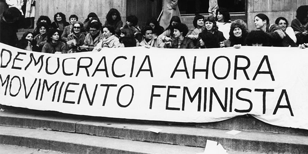

La “Primera Ola Feminista” surgió a mediados del siglo XVIII, en torno a la polémica sobre la naturaleza de la mujer y la jerarquía de sexos. Estas pensadoras indagaron acerca de la educación y los derechos de la mujer. Cuestionaron los privilegios masculinos afirmando que no son una cuestión biológica y/o natural. Las autoras de referencia son: Poullain de Barre, Olympe de Gouges y Mary Wollstonecraft, esta última autora del famoso texto Vindicación de los derechos de la mujer (1792), un punto de partida fundamental para cambiar el pensamiento de la época.
La “Segunda Ola Feminista” se dio desde mediados del siglo XIX hasta la década de los cincuenta del siglo XX. Aborda entre sus puntos principales el derecho al voto femenino. Es aquí cuando el debate alrededor del sufragio universal se intensifica (la película Las sufragistas, del año 2015, retrata este momento en Ingaterra). Además, las mujeres reclaman el acceso a la educación superior, critican la obligatoriedad del matrimonio y comienzan a liberarse en su aspecto físico.
La “Tercera Ola Feminista” llegó en la década del sesenta y hay distintas opiniones respecto a su finalización. Mientras que algunos sostienen que sigue vigente, otros afirman que finalizó en los años ochenta. Va de las políticas públicas que reivindican a la mujer hasta el fin del patriarcado. En este movimiento fueron fundamentales los anticonceptivos porque le otorgaron el poder del control de la natalidad (y la liberación del goce sexual, no atado a la reproducción) y el divorcio se hizo ley en muchos países. Caen las vendas del "amor para toda la vida" y aparecen otras opciones para mujeres rebeldes. Las mujeres son candidatas reales en el mundo político, aunque su porcentaje es sensiblemente inferior al de los hombres.
Cuando el Estado no exige responsabilidades a los perpetradores de la violencia, no sólo alienta la comisión de nuevos actos de esa índole, sino que da a entender que la violencia que ejerce el hombre contra la La mujer es aceptable o normal. El resultado de esa impunidad no es sólo la negación de la justicia a las distintas víctimas/sobrevivientes, sino que refuerza las desigualdades predominantes que afectan a otras mujeres y niñas también.
La violencia contra la mujer es la causa y, a la vez, la consecuencia de la discriminación contra la mujer. Los Estados tienen la obligación de respetar, proteger, promover y facilitar el ejercicio de todos los derechos humanos, incluido el derecho de la mujer a no ser discriminada. Cuando esto no ocurre se ejerce y se exacerba la violencia contra la mujer. Por ejemplo, si los Estados permiten que las leyes discriminatorias sigan en vigor, o si en las leyes no se consideran delito ciertas formas de violencia contra la mujer, estos actos se cometerán con toda impunidad.
